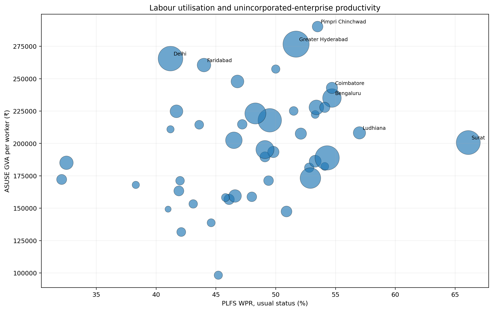
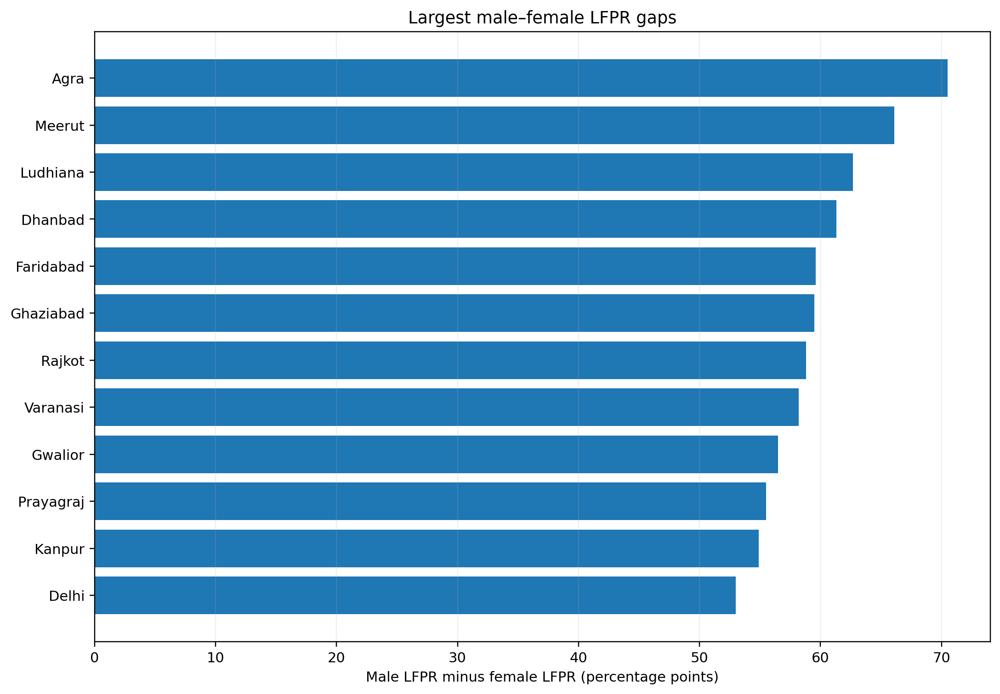
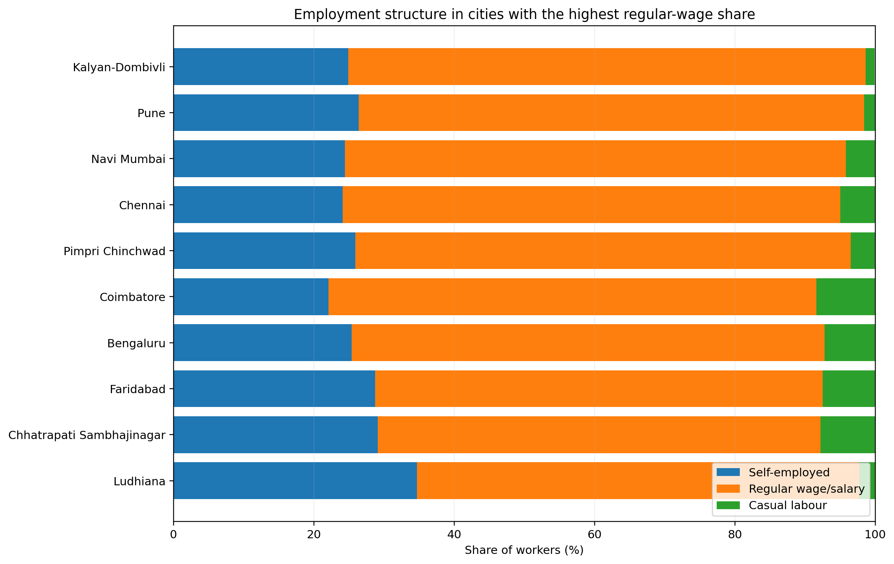

The Duality of Job Creation in India's Big Cities
India’s million-plus cities are creating more regular jobs and a more productive urban economy, but the transformation is uneven especially when it comes to employment quality and participation.

When it comes to big city economies in India, there is no single “million-plus population city” model.
New city-level data show that some of India’s largest urban centres combine high participation, regular employment and relatively productive business activity. Others have productive enterprises without broad labour-market participation. And in several cities, women remain far more likely to be outside the labour force.
The pattern emerges by putting two new government datasets together: the Periodic Labour Force Survey’s first dedicated report on 46 million-plus cities and the Annual Survey of Unincorporated Sector Enterprises, or ASUSE, which provides a city-level view of establishments, workers and productivity.
More regular employment tends to coincide with higher business productivity
Interestingly, across the 46 million-plus population cities in India, the share of workers in regular wage or salary employment has a correlation of about 0.56 with ASUSE GVA per worker. The relationship is descriptive so we can't claim it to be causal, but it points to a common pattern.

The pattern is visible in cities such as Pimpri Chinchwad, Pune, Coimbatore and Bengaluru. Pimpri Chinchwad has 70.6% regular wage/salary employment and ASUSE GVA per worker of ₹2.90 lakh. Coimbatore combines 69.5% regular wage employment with ₹2.43 lakh GVA per worker. Pune records 72.0% regular wage employment and ₹2.28 lakh GVA per worker.
Chennai also has a relatively large regular-wage component, at 70.9%, although its ASUSE GVA per worker is lower at ₹1.95 lakh.
Cities where employment is more heavily concentrated in salary or regular wage work also tend to have a more productive unincorporated business economy.
Productive cities do not automatically have broad labour market participation
Delhi illustrates the disconnect. Its ASUSE economy produces ₹2.66 lakh of GVA per worker and 50.26% of its workers are hired workers. Yet its overall WPR is only 41.2%, while female LFPR is just 15.5%.
The gender picture is particularly stark. Only 13.5% of workers in Delhi’s ASUSE enterprise economy are women.
While Delhi has a highly productive business economy and a relatively large regular wage/salary component, it remains to have weaker labour utilisation and especially low female participation.
High productivity does not by itself tell us how wide a city's labour market reach is.
The gap between cities is especially large for women
The national urban average hides the difference between individual million-plus cities.

Across all million-plus cities, female LFPR stands at 27.2%, compared with 75.9% for men.
But the city-level range is much wider. Female LFPR reaches 41.3% in Coimbatore, 40.6% in Surat, 35.9% in Pune and 34.6% in Greater Visakhapatnam.
At the other end, the rate is only 9.3% in Prayagraj, 10.4% in Meerut, 11.4% in Agra and 10.8% in Ghaziabad.
Hence, “urban India” or "million-plus cities" is too broad a category for understanding women’s participation. The experience of women in a major industrial city can look very different from that of women in another million-plus city.
Childcare and home-making dominate the reasons women remain outside the labour force
Among women outside the labour force in million-plus cities, 68.7% identify childcare, personal commitments or home-making as their main reason.
Surat in Gujarat shows that participation and productivity are not the same thing
Surat does not fit neatly into a simple “higher productivity means better labour market” story.
Its LFPR is 66.7% and its WPR is 66.1%, both unusually high among the 46 cities. Female LFPR is 40.6%, while women account for 41.39% of workers in the ASUSE enterprise economy.
Yet its ASUSE GVA per worker is ₹2.01 lakh — well below the highest-productivity cities in the dataset.
Surat provides an important counter-example: a city can have high overall and female labour force participation without being at the top of the productivity distribution.
The jobs advantage that big cities hold is thanks in part how employment is structured
The distinction between million-plus cities and urban India is about what kind of employment they have. We need to look beyond the total number of jobs represented as a percentage.

Regular wage or salary employment accounts for 58.5% of workers in million-plus cities, compared with 47.6% in urban India.
Casual labour, by contrast, accounts for only 6.3% of employment in million-plus cities, against 12.0% in urban India.
The difference in women's employment: regular wage or salary employment accounts for 65.1% of employed women in million-plus cities, compared with 50.9% in urban India.
There is no single million-plus city model. Across India's geography, the labour market looks very different from one city to another. However, four broad patterns emerge after analyzing the data.
High productivity and regular employment
Pimpri Chinchwad, Pune, Coimbatore, Bengaluru and Kalyan-Dombivli combine relatively high regular-wage shares with relatively high ASUSE GVA per worker. Pimpri Chinchwad is particularly striking, with 70.6% regular wage/salary employment and ₹2.90 lakh GVA per worker.
High participation
Surat stands out for its high overall and female labour participation and its large female presence in the ASUSE workforce.
Productive but less inclusive
Delhi and Greater Hyderabad have productive unincorporated economies and substantial hired-worker employment, but female representation remains much lower than the overall economic activity might suggest.
Lower participation
Prayagraj, Gwalior, Agra and several northern cities show substantially lower labour participation and greater reliance on self-employment. Prayagraj, for example, has a WPR of 32.1%, female LFPR of 9.3% and only 31.3% regular wage/salary employment.
The real divide goes beyond the question of which cities have more jobs
The data points to different stories unfolding inside India's largest urban economies, i.e., cities with more than a million people.
On the one hand, million-plus cities have a markedly more regular employment structure than urban India as a whole. Their unincorporated economies also account for a disproportionately large share of national GVA relative to their share of establishments.
On the other, the people benefiting from that transformation differ sharply by city. Some cities combine participation, regular employment and productivity. Others have productive enterprises without broad labour-market inclusion. And in several cities, women remain largely outside the labour market.
As a result, we see several different urban labour-market structures running across the country, and policy changes need to reflect the needs of individual cities. One model can't fit into all cities.
Patterns across cities
The datasets show differences in labour-force participation, employment structure, earnings, working hours, women's participation, youth NEET and the scale and productivity of the unincorporated business economy across 46 million-plus cities.
Causality of the relationships
The cross-city relationships are descriptive. They do not establish that regular employment causes higher productivity, that productivity causes women's participation, or why one city's labour market performs differently from another's.
Methodology and limitations
The analysis combines the first dedicated PLFS report on 46 million-plus cities, based on the 2025 survey cycle, with ASUSE 2025's city-level estimates for the unincorporated non-agricultural sector. The July 2026 PLFS monthly bulletin is used separately to show the recent urban labour-market pulse rather than being forced into the city-level cross-section.
The analysis began with the original PDF reports. The tables were converted to layout-preserving text, parsed into CSV files, checked for 46-city coverage and duplicate or out-of-range observations, and then merged on harmonised city names.
PLFS and ASUSE measure different things. PLFS describes people and their labour-market status, while ASUSE describes establishments and workers in the covered unincorporated non-agricultural economy. ASUSE GVA per worker is therefore not equivalent to total city GDP or average earnings for all workers. City-level survey estimates also carry sampling variability, so Relative Standard Errors should be considered when comparing individual cities.